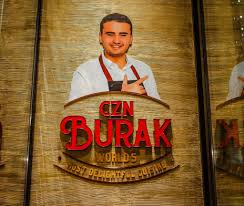
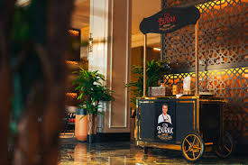
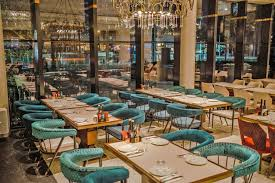

The culinary experience at CZN Restaurant is nothing short of exceptional. The chefs combine innovative cooking techniques with the freshest ingredients to create dishes that are both visually stunning and full of flavor. Each dish is crafted with care, showcasing a blend of local and international influences. From the rich and hearty dishes to the light and fresh options, there’s something for everyone on the menu. The focus on quality ingredients ensures that every bite is bursting with flavor, whether you’re enjoying a simple pasta dish, a perfectly grilled steak, or a vibrant vegetable salad.


The restaurant chain has locations in various cities, including Istanbul, Dubai, and Doha, attracting both locals and tourists. The menu typically includes kebabs, mezes, and various Turkish desserts, all prepared with high-quality ingredients and presented in an eye-catching manner. The dining experience at CZN Burak is as much about the visual appeal and showmanship as it is about the delicious food

CZN Restaurant is widely acclaimed for its signature dishes that have quickly become fan favorites. Among the most popular is the CZN Burger, a juicy, perfectly seasoned patty made from premium beef, topped with fresh lettuce, tomato, and a special house-made sauce that adds a burst of flavor with every bite. Served with crispy, golden fries, this burger is a standout in a menu full of delicious options. Another must-try is the CZN Lamb Shank, slow-cooked to perfection until the meat is tender and falls off the bone with ease. The dish is served with a rich, flavorful sauce that complements the lamb’s natural flavors and is accompanied by roasted vegetables and mashed potatoes for a truly indulgent experience. For those who prefer seafood, the Seafood Platter is a perfect choice, featuring a fresh assortment of oysters, shrimp, calamari, and other ocean delicacies. The seafood is impeccably prepared and beautifully presented, offering a taste of the ocean’s best. What sets these signature dishes apart is not just the quality of the ingredients but also the skill and passion of the chefs who create them. CZN Restaurant’s menu is constantly evolving, introducing new dishes that keep regular guests excited to return and try something different every time.
The ambiance at CZN Restaurant is thoughtfully designed to enhance the overall dining experience. The interior features a modern, minimalist design with clean lines, contemporary furnishings, and ambient lighting that creates a relaxed yet chic atmosphere. The open kitchen concept allows diners to witness the chefs at work, adding an element of excitement to the meal. Whether you’re enjoying an intimate dinner or a larger gathering, the restaurant offers both cozy, private corners and spacious tables for groups. The staff at CZN is known for their professionalism and attention to detail, ensuring that every guest feels well taken care of from start to finish. Whether you’re visiting for a casual lunch or a special celebration, the service at CZN guarantees a seamless and enjoyable experience.
CZN Restaurant is not just about great food; it is also committed to sustainability and innovation. The restaurant strives to reduce its environmental footprint by sourcing ingredients from local farms and suppliers who practice sustainable agriculture. This ensures that the food served is not only fresh and high-quality but also ethically produced. In addition, CZN embraces innovation in the kitchen, regularly updating its menu to reflect new culinary trends and seasonal ingredients. This commitment to sustainability and creativity makes CZN not just a place to enjoy a meal, but also a socially responsible establishment that cares about the community and the environment. As the restaurant continues to grow, it remains dedicated to offering a dining experience that is as innovative as it is sustainable, ensuring that every guest can enjoy exceptional food while supporting responsible practices.